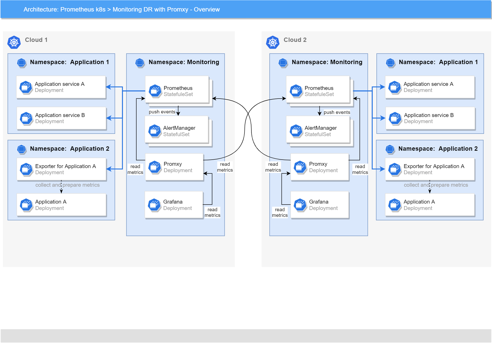
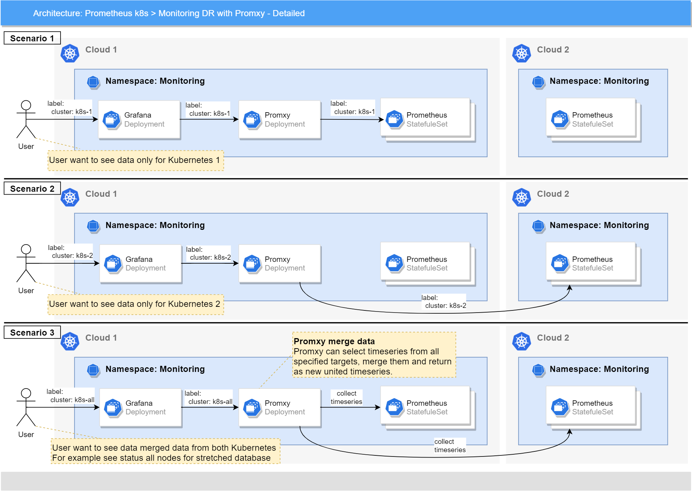

This document describes how to configure Monitoring work in Disaster and Recovery mode (DR).
Metrics¶
Deployment assumptions¶
- The main assumption that monitoring deploy on both sides (on to N Kubernetes) independently and doesn't depend on another monitoring deployments.
- We do not have any external VM which available from all Kubernetes clusters. But we can have a separated VMs in availability zone with specific Kubernetes.
- We can have external integration.
- It is a possible way to create backup collected metrics on HA storage (like S3) and provide instruction how to use it to see the latest data with manual steps.
Deployment schema¶
Installation with Promxy¶
Deployment schema:

You can use Promxy to deploy monitoring in DR mode. It's a proxy to request data from several Prometheuses/VictoriaMetrics from different clusters and show all data in the single Grafana UI. Also, this proxy can merge data from some sides and show merged data.
You can install blackbox-exporter too for getting information about other side. The blackbox-exporter allows blackbox probing of endpoints over HTTP or HTTPS to check health status of the other side of your DR schema.
If you want to install monitoring-operator in DR mode by using Promxy and blackbox-exporter, follow these steps:
- Add configuration for Promxy to your inventory (see Promxy configuration examples for more information)
- Add configuration for blackbox-exporter to your inventory (see blackbox-exporter configuration examples for more information)
- Run rolling update/clean installation of your monitoring, wait until it's finished and the monitoring-operator ends up its reconciliation cycle
- Open Grafana UI, go to the dashboard you need and choose
Platform Monitoring Promxyas a datasource - You can pick different clusters by changing
clusterfilter on the dashboard to view data from all sides of your DR schema
Promxy configuration examples¶
A simple example of CMDB parameters for Promxy:
promxy:
install: true
config:
serverGroups:
- address: vmsingle-k8s:8429
label: cluster-1
- address: vmsingle-k8s.monitoring.svc.cluster-2.local:8429
label: cluster-2
scheme: https
As you can see from the example, Promxy will add additional labels to all timeseries:
- for timeseries selected from
vmsingle-k8s:8429label "cluster: cluster-1" will be added - for timeseries selected from
vmsingle-k8s.monitoring.svc.cluster-2.local:8429label "cluster: cluster-2" will be added
The labels above will be used on Grafana dashboards in the cluster filter to allow choosing the source of the data.
If you want to use Prometheus instead of VictoriaMetrics, you can replace vmsingle-k8s with prometheus-operated and
change port to the correct one (default port for Prometheus is 9090).
If you want to set more customizable config for Promxy, you can use config.detailedConfig to set the Promxy
configuration as-is:
promxy:
install: true
config:
detailedConfig:
global:
evaluation_interval: 5s
external_labels:
source: promxy
promxy:
server_groups:
- static_configs:
- targets:
- vmsingle-k8s:8429
labels:
cluster: cluster-1
anti_affinity: 10s
scheme: http
http_client:
dial_timeout: 1s
tls_config:
insecure_skip_verify: true
- static_configs:
- targets:
- vmsingle-k8s.monitoring.svc.cluster-2.local:8429
labels:
cluster: cluster-2
anti_affinity: 10s
scheme: https
http_client:
tls_config:
insecure_skip_verify: true
ignore_error: true
Detailed scenarios how to use select data with using Promxy:

Blackbox-exporter configuration examples¶
The following example will allow you to check health status of the other side of the DR schema:
blackboxExporter:
install: true
config:
modules:
http_2xx:
prober: http
timeout: 5s
http:
valid_http_versions: ["HTTP/1.1", "HTTP/2.0"]
no_follow_redirects: false
preferred_ip_protocol: "ip4"
tls_config:
insecure_skip_verify: true
serviceMonitor:
targets:
- name: <side_1/side_2>
url: <side_1/side_2_cluster_url>
interval: 60s
scrapeTimeout: 60s
module: http_2xx
additionalMetricsRelabels: {}
Migration to non-DR schema¶
If you want to use your monitoring separately from the DR schema, you can simply uninstall Promxy and switch to the Prometheus/VictoriaMetrics datasource on the dashboards:
- Change your configuration to uninstall Promxy:
- Change your configuration to uninstall blackbox-exporter or remove the part of its configuration for checking status of the other side of the DR schema
- Run rolling update and wait until the monitoring-operator ends up its reconciliation cycle
- Choose
Platform Monitoring Prometheusas a datasource on Grafana dashboards
Alerting¶
Currently, we have 4 alerts for DR:
ProbeFailed- Probe failed for instance.SlowProbe- Slow probe for instance.HttpStatusCode- HTTP status code is not 200-399.HttpSlowRequests- HTTP request took more than 1s.
NOTE: These alerts use metrics from blackbox-exporter and included if blackboxExporter.install: true.
Alerting assumptions¶
Currently, for alerting we can use only AlertManager because for use AMS need make additional changes (such as make a separated deployment, add PromQL support and so on).
How to prevent alert generation on DR site (Use inhibition)¶
AlertManager allow create inhibition rules, which allow suppressing notifications for certain alerts if certain other alerts are already firing. Usually it's using for cases when we have some alerts with same name. but with different thresholds and severity.
For example:
Streaming_Platform_CPU_Load_Alert:
Expression: 'max(rate(container_cpu_usage_seconds_total{container="POD",namespace="streaming-service",pod=~".*-platform-\\w+-\\w+"}[2m])) / max(kube_pod_container_resource_limits_cpu_cores{exported_namespace="streaming-service",exported_pod=~".*-platform-\\w+-\\w+"})'
Threshold: > 0.95
Labels:
Severity: high
Component: streaming
Streaming_Platform_CPU_Load_Alert:
Expression: 'max(rate(container_cpu_usage_seconds_total{container="POD",namespace="streaming-service",pod=~".*-platform-\\w+-\\w+"}[2m])) / max(kube_pod_container_resource_limits_cpu_cores{exported_namespace="streaming-service",exported_pod=~".*-platform-\\w+-\\w+"})'
Threshold: > 0.90
Labels:
Severity: major
Component: streaming
Streaming_Platform_CPU_Load_Alert:
Expression: 'max(rate(container_cpu_usage_seconds_total{container="POD",namespace="streaming-service",pod=~".*-platform-\\w+-\\w+"}[2m])) / max(kube_pod_container_resource_limits_cpu_cores{exported_namespace="streaming-service",exported_pod=~".*-platform-\\w+-\\w+"})'
Threshold: > 0.85
Labels:
Severity: low
Component: streaming
In this case we can create an inhibit rule like:
-
Secret / alertmanager-k8s
inhibit_rules: - source_matchers: [ severity="disaster" ] target_matchers: [ severity=~"(high|major|low)" ] equal: [ component ] - source_matchers: [ severity="high" ] target_matchers: [ severity=~"(major|low)" ] equal: [ component ] - source_matchers: [ severity="major" ] target_matchers: [ severity="low" ] equal: [ component ]
This rule means:
- If alert with severity = disaster is active now, hide all alerts with severity high, major or low, with the same value of component label (for our example "component=streaming")
- If alert with severity = high is active now, hide all alerts with severity major or low, with the same value of component label (for our example "component=streaming")
- If alert with severity = major is active now, hide all alerts with severity low, with the same value of component label (for our example "component=streaming")
Also, we can use this feature to make dependency between any other alerts. For services which has DR schema when one side is active and another side stopped we can:
- Create alert which will check service/application state on current side and should be raise if service stopped
- Create inhibit rule which suppress all services alerts is such alert is active